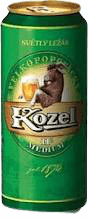

Kozel
Velkopopovický Kozel wird seit 1874 in der Brauerei von Velke Popovice südöstlich von Prag gebraut. Das Symbol der Brauerei ist ein Ziegenbock (tsch. Kozel).
Kozel Medium

Angenehmer leicht bitterer Geschmack mit mildem Malz und Hopfen-Aroma.
Helles Lager Bier
4,6 Vol% alc.
0,5l Dose